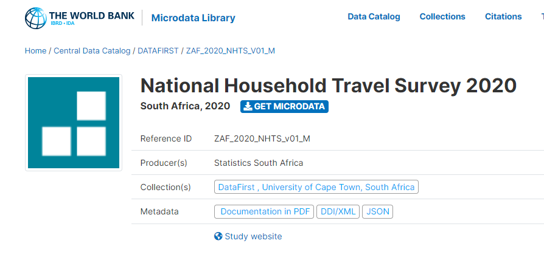
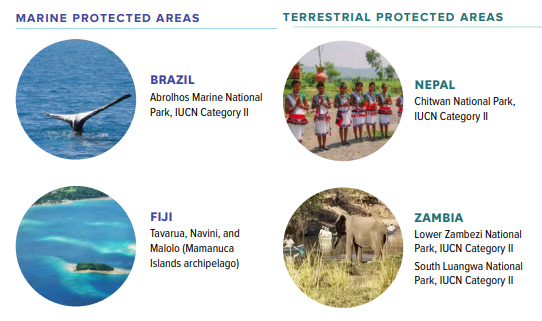
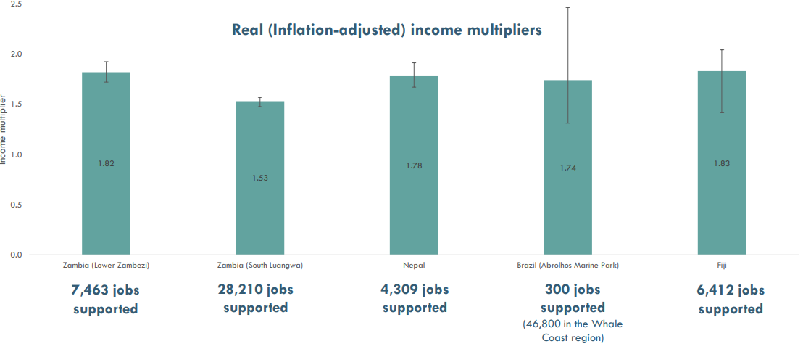
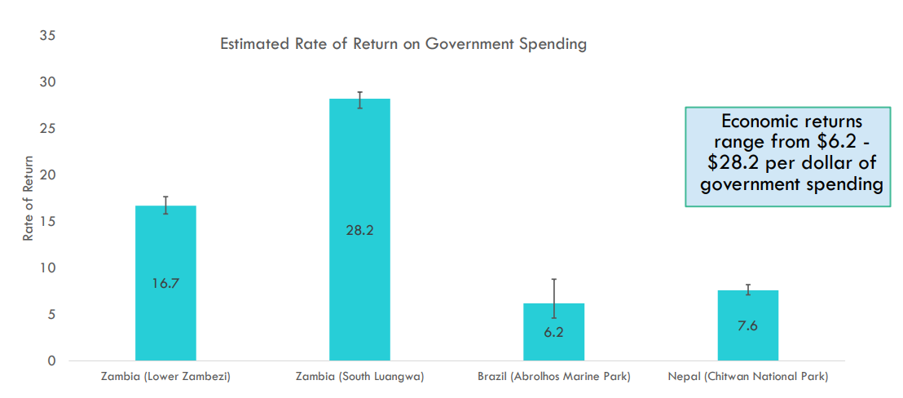

Using Data to Understand Links Between Tourism and Sustainable Development
Brian Stacy
Introduction
- Tourism is a major economic driver for many countries
- Recent crises have highlighted the vulnerability of tourism
- COVID-19
- Climate change
- Sustainable tourism is a key component of the UN Sustainable Development Goals (SDGs)
- Mentioned specifically in SDG 8, 12, and 14
- But relevant to many others
World Bank Data
World Bank Open Data Portal. All data free and open access
- Can access more than 1,400 indicators in World Development Indicators (WDI)
- Microdata Library
- Open Finances
- Geospatial Data
Data Sourced from:
- World Bank
- International Organizations
- National Statistical Offices
World Bank Tourism Data

Using Open Data for Sustainable Tourism
COVID-19 crisis
Macao Airport traffic saw massive fall during pandemic
COVID-19 crisis
So did Heathrow.
Source: Heathrow Traffic Statistics
COVID-19 crisis
Singapore hotel revenue fell greatly.
Source: SingStat
Slow Economic Recovery
- Stunning fall in tourism in many economies
- Followed by a slow recovery
Tourism Dependent Economies Suffered
SDG Atlas Chapter 8
- How have economies recovered from COVID?
- Compared pre-COVID economic forecasts to current forecasts for 188 economies
- Calculated how gap between pre-pandemic expected GDP and current projections

Macao
Macao still far below pre-pandemic projections
Aruba
Aruba has recovered further
See more in SDG Atlas Chapter 8
Climate Change
- Climate change is another major threat to tourism
- Many economies dependent on tourism are also vulnerable to climate change
- Sea level rise is a major threat to many economies
- As is coral reef degradation
- Sea level rise is a major threat to many economies
Sea Level Rise
2020 SDG Atlas Chapter 14 on Coral Reefs
What are the success stories?
Tourism and Sustainable Development
World Bank case studies on building sustainable tourism using marine/terrestrial protected areas
Found big impacts on local economies
- Measured using World Bank surveys in collaboration with local partners
What are the success stories?
Success Stories
Big impacts on Incomes and Jobs
Income and Job Gains
Return on Investment is at least 6:1
Return on Investment
Conclusions
- Tourism is a major economic driver for many economies
- Tourist dependent economies are vulnerable to shocks like COVID-19 and climate change
- Data can help us understand these links and inform policy decisions